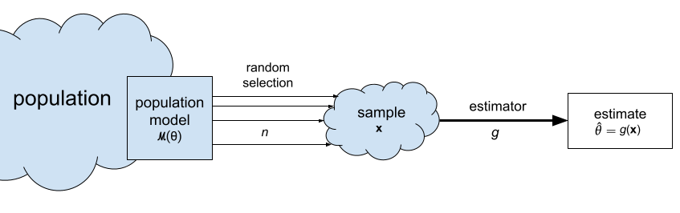
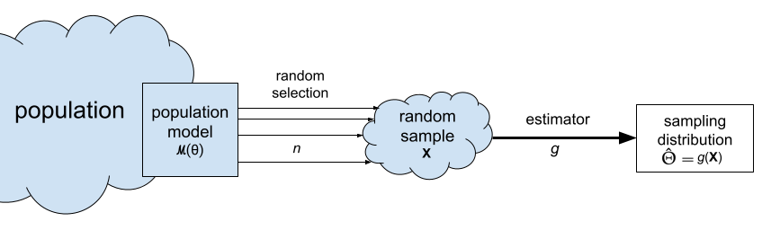
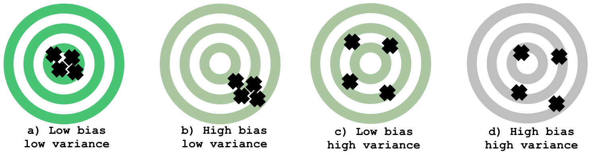

Section 3.1 — Estimators#
This notebook contains the code examples from Section 3.1 Estimators of the No Bullshit Guide to Statistics. Use the “rocket” icon at the top-right to make the code cells interactive (Live Code), or run this notebook an ephemeral JupyterLab cloud instance (Binder).
We’ll begin our study of inferential statistics by introducing estimators, which are the math tools used for computing confidence intervals and running hypothesis tests.

Notebook setup#
# Ensure required Python modules are installed
%pip install --quiet numpy scipy seaborn pandas ministats
[notice] A new release of pip is available: 26.0 -> 26.0.1
[notice] To update, run: pip install --upgrade pip
Note: you may need to restart the kernel to use updated packages.
# load Python modules
import os
import numpy as np
import pandas as pd
import matplotlib.pyplot as plt
import seaborn as sns
# Plot helper functions
from ministats import plot_pdf
# Figures setup
plt.clf() # needed otherwise `sns.set_theme` doesn't work
sns.set_theme(
context="paper",
style="whitegrid",
palette="colorblind",
rc={"font.family": "serif",
"font.serif": ["Palatino", "DejaVu Serif", "serif"],
"figure.figsize": (7, 2)},
)
%config InlineBackend.figure_format = 'retina'
# Useful colors
snspal = sns.color_palette()
blue, orange, purple = snspal[0], snspal[1], snspal[4]
<Figure size 640x480 with 0 Axes>
# Simple float __repr__
if int(np.__version__.split(".")[0]) >= 2:
np.set_printoptions(legacy='1.25')
# set random seed for repeatability
np.random.seed(42)
# Download datasets/ directory if necessary
from ministats import ensure_datasets
ensure_datasets()
datasets/ directory already exists.
\(\def\stderr#1{\mathbf{se}_{#1}}\) \(\def\stderrhat#1{\hat{\mathbf{se}}_{#1}}\) \(\newcommand{\Mean}{\textbf{Mean}}\) \(\newcommand{\Var}{\textbf{Var}}\) \(\newcommand{\Std}{\textbf{Std}}\) \(\newcommand{\Freq}{\textbf{Freq}}\) \(\newcommand{\RelFreq}{\textbf{RelFreq}}\) \(\newcommand{\DMeans}{\textbf{DMeans}}\) \(\newcommand{\Prop}{\textbf{Prop}}\) \(\newcommand{\DProps}{\textbf{DProps}}\)
(this cell contains the macro definitions \(\stderr{\theta}\), \(\stderrhat{}\), \(\Mean\), …)
Applications of sampling distributions#
Parameter estimates
Confidence intervals (next section)
Test statistics (remainder of the sections in this chapter)
Definitions#
Review of data concepts#
To get things started, let’s review the data analysis concepts:
Population: the entire group of individuals we’re interested in. We generally assume it’s impossible to collect measurements for the entire population, because it consists of thousands or millions of individuals.
Sample \(\mathbf{x} = (x_1, x_2, \ldots, x_n)\): a sequence of \(n\) observations from the population. Each \(x_i\) corresponds to a measurement from one individual randomly selected from the population.
Sample statistic: any quantity computed from the sample \(\mathbf{x}\).
Descriptive statistics: numerical summaries that describe the characteristics of the sample \(\mathbf{x}\). Example of descriptive statistics include, the sample mean \(\overline{\mathbf{x}}\), the sample variance \(s_{\mathbf{x}}^2\), and the sample standard deviation \(s_{\mathbf{x}}\).
Review of probability concepts#
Let’s review the main concepts and the notation we used to describe probability models:
\(X \sim \mathcal{M}(\theta)\): the population probability model describes the variability of the data in the population as a random variable \(X\) with probability distribution \(f_X\).
\(\mathcal{M}\): the model family describes the general “shape” of the distribution. Examples of probability model families include the uniform \(\mathcal{U}\), the normal \(\mathcal{N}\), and the exponential \(\text{Expon}\).
\(\theta\): the model parameters that describe the specific population. Examples of model parameters: \(\alpha\) and \(\beta\) for uniform models, \(\mu\) and \(\sigma\) for normal models, and \(\lambda\) for exponential models.
\(\tt{rvX}\): the computer model of the random variable \(X \sim \mathcal{M}(\theta)\).
Random sample \(\mathbf{X} = (X_1, X_2, \ldots, X_n)\): a sequence of \(n\) observations from the population model. Each \(X_i\) is an independent copy of the random variable \(X \sim \mathcal{M}(\theta)\).
New concepts#
Building on the DATA and PROB definitions, we can now introduce the notation and terminology around estimators:
Estimate \(\hat{\theta}\): a statistic computed from the sample \(\mathbf{x}\) for the purpose of making inferences about a population parameter \(\theta\). For example, the sample mean \(\overline{\mathbf{x}}\) is an estimate of the population mean \(\mu_X\).
Estimator \(g : \mathcal{X}^n \to \mathbb{R}\): the function that we use to compute the estimate \(\hat{\theta}\) from a given sample \(\mathbf{x} = (x_1, x_2, \ldots, x_n)\). We denote this as \(\hat{\theta} = g(\mathbf{x})\). For example, the estimator \(\Mean\) is defined as the function \(\Mean(\mathbf{x}) = \tfrac{1}{n}\!\sum_{i=1}^n x_i\). We use the estimator \(\Mean\) to compute the sample mean estimate \(\overline{\mathbf{x}}\).
The sampling distribution of the estimator \(g\) is denoted \(\hat{\Theta} = g(\mathbf{X})\) and describes the estimates we can expect to observe from random samples from the population \(\mathbf{X} = (X_1, X_2, \ldots, X_n)\). For example, the sampling distribution of the mean is the random variable \(\overline{\mathbf{X}} = \Mean(\mathbf{X}) = \tfrac{1}{n}\!\sum_{i=1}^n X_i\).
The standard error of an estimator \(g\) is denoted \(\stderr{\hat{\theta}}\) and describes the standard deviation of its sampling distribution. For example, the standard error of the mean is denoted \(\stderr{\overline{\mathbf{x}}}\).

Statistical inference is the use the values of the statistics obtained from the sample \(\mathbf{x} = (x_1, x_2, \ldots, x_n)\) to estimate the population parameters \(\theta\). For example, the sample mean \(\overline{\mathbf{x}}=\Mean(\mathbf{x})\) is an estimate of the population mean \(\mu\), and the sample variance \(s_{\mathbf{x}}^2=\Var(\mathbf{x})\) is an estimate of the population variance \(\sigma^2\).
Estimators#
Let’s start with some estimators you’re already familiar with (discussed in descriptive statistics):
Sample mean estimator#
estimator: \(\overline{\mathbf{x}} = \Mean(\mathbf{x}) = \frac{1}{n}\sum_{i=1}^n x_i\)
gives an estimate for the population mean \(\mu\)
def mean(sample):
return sum(sample) / len(sample)
# ALT. use .mean() method on a Pandas series
# ALT. use np.mean(sample)
Sample variance and standard deviation#
estimator: \(s_{\mathbf{x}}^2 = \Var(\mathbf{x}) = \frac{1}{n-1}\sum_{i=1}^n (x_i-\overline{\mathbf{x}})^2\)
gives an estimate for the population variance \(\sigma^2\)
note the denominator is \((n-1)\) and not \(n\)
def var(sample):
xbar = mean(sample)
sumsqdevs = sum([(xi-xbar)**2 for xi in sample])
return sumsqdevs / (len(sample)-1)
# ALT. use .var() method on a Pandas series
# ALT. use np.var(sample, ddof=1)
The standard deviation \(s_{\mathbf{x}}^2\) is the square root of the sample variance:
We can now define a Python function std for computing the standard deviation by taking the square root of the variance:
def std(sample):
s2 = var(sample)
return np.sqrt(s2)
# ALT. use .std() method on a Pandas series
# ALT. use np.std(sample, ddof=1)
Example 1: apple weight mean and variance#
apples = pd.read_csv("datasets/apples.csv")
asample = apples["weight"]
asample.count()
30
type(asample)
pandas.core.series.Series
# asample
type(asample.values)
numpy.ndarray
asample.values
array([205., 182., 192., 189., 217., 192., 210., 240., 225., 191., 193.,
209., 167., 183., 210., 198., 239., 188., 179., 182., 200., 197.,
245., 192., 201., 218., 198., 211., 208., 217.])
sns.histplot(asample, bins=10);
{kind=link}
sns.kdeplot(asample, bw_adjust=0.3);
{kind=link}
Next let’s calculate the mean of the sample:
mean(asample)
202.6
Let’s also calculate the variance and the standard deviation of the sample of the apple weights:
var(asample), std(asample)
(345.9724137931035, 18.60033370112223)
# ALT. call `.describe()` to get five-point summary
asample.describe()
count 30.000000
mean 202.600000
std 18.600334
min 167.000000
25% 191.250000
50% 199.000000
75% 210.750000
max 245.000000
Name: weight, dtype: float64
Example 2: kombucha volume mean and variance#
kombucha = pd.read_csv("datasets/kombucha.csv")
# kombucha
batch01 = kombucha[kombucha["batch"]==1]
ksample01 = batch01["volume"]
ksample01.count()
40
ksample01.values
array([1016.24, 993.88, 994.72, 989.27, 1008.65, 976.98, 1017.45,
992.39, 1003.19, 997.51, 1014.62, 979.4 , 996.78, 996.16,
1011.34, 989. , 998.28, 991.22, 1000.42, 1005.83, 988.99,
1011.45, 1009.02, 1005.02, 1009.01, 993.16, 998.77, 990.64,
997.32, 1005.3 , 993.08, 996.03, 993.13, 991.55, 993.29,
999.87, 988.83, 1002.34, 1016.6 , 1007.42])
sns.kdeplot(ksample01, bw_adjust=0.3);
{kind=link}
mean(ksample01)
999.10375
var(ksample01), std(ksample01)
(95.43654198717958, 9.769162808919686)
Difference between sample means estimator#
We’ll now discuss an estimators that is specific for the comparison of the two groups.
estimator: \(\hat{d} = \DMeans(\mathbf{x}_A, \mathbf{x}_B) = \Mean(\mathbf{x}_A) - \Mean(\mathbf{x}_B) = \overline{\mathbf{x}}_A - \overline{\mathbf{x}}_B\)
gives an estimate for the difference between population means: \(\Delta = \mu_A - \mu_B\)
def dmeans(xsample, ysample):
"""
Compute the difference between group means of the samples.
"""
dhat = mean(xsample) - mean(ysample)
return dhat
Example 3: comparison of electricity prices#
Let’s compute the difference between means of the East and West electricity prices.
eprices = pd.read_csv("datasets/eprices.csv")
# eprices
epricesW = eprices[eprices["loc"]=="West"]
pricesW = epricesW["price"]
pricesW.values
array([11.8, 10. , 11. , 8.6, 8.3, 9.4, 8. , 6.8, 8.5])
mean(pricesW), var(pricesW)
(9.155555555555555, 2.440277777777778)
epricesE = eprices[eprices["loc"]=="East"]
pricesE = epricesE["price"]
pricesE.values
array([7.7, 5.9, 7. , 4.8, 6.3, 6.3, 5.5, 5.4, 6.5])
mean(pricesE), var(pricesE)
(6.155555555555555, 0.7702777777777777)
Let’s calculate the mean of the prices in the East and the West:
mean(pricesW), mean(pricesE)
(9.155555555555555, 6.155555555555555)
To calculate the difference between means,
we can simply subtract these two numbers \(\hat{d} = \overline{\mathbf{x}}_W - \overline{\mathbf{x}}_E\),
or simply call the function dmeans
which computes the estimate \(\hat{d} = \textbf{DMeans}(\tt{pricesW}, \tt{pricesE})\).
dmeans(pricesW, pricesE)
3.0
According to this estimate, the average price Rob can expect in the East end is three cents cheaper, on average, as compared to the average electricity price in the West.
Sampling distributions#
Let’s look at the same estimators that we described in the previous section, but this time applied to random samples of size \(n\):
Sample mean: \(\overline{\mathbf{X}} = \Mean(\mathbf{X}) = \tfrac{1}{n}\sum_{i=1}^n X_i\)
Sample variance: \(S_{\mathbf{X}}^2 = \Var(\mathbf{X}) = \tfrac{1}{n-1}\sum_{i=1}^n \left(X_i - \overline{\mathbf{X}} \right)^2\)
Sample standard deviation: \(S_{\mathbf{X}} = \sqrt{\Var(\mathbf{X})} = \sqrt{\tfrac{1}{n-1}\sum_{i=1}^n \left(X_i - \overline{\mathbf{X}} \right)^2}\)
Difference between sample means: \(\hat{D} = \DMeans(\mathbf{X}, \mathbf{Y}) = \overline{\mathbf{X}} - \overline{\mathbf{Y}}\)
Note these formulas is identical to the formulas we saw earlier. The only difference is that we’re calculating the functions \(g\), \(h\), and \(d\) based on a random sample \(\mathbf{X} = (X_1, X_2, \ldots, X_n)\), instead of particular sample \(\mathbf{x} = (x_1, x_2, \ldots, x_n)\).
Example 4#
from ministats import gen_samples
from ministats import plot_samples
from ministats import gen_sampling_dist
from ministats import plot_sampling_dist
Let’s generate \(N=10\) samples \(\mathbf{z}_1, \mathbf{z}_2, \mathbf{z}_3, \ldots, \mathbf{z}_{10}\), and compute the mean, the variance, and the standard deviation in each sample.
from scipy.stats import norm
rvZ = norm(0, 1)
zsamples_df = gen_samples(rvZ, n=20, N=10)
with plt.rc_context({"figure.figsize":(7, 2)}):
ax = plot_samples(zsamples_df, xlims=[-2.5,2.5], showstd=True)
{kind=link}
Now imagine repeating this process for \(N=1000\) samples \(\mathbf{z}_1, \mathbf{z}_2, \mathbf{z}_3, \ldots, \mathbf{z}_{1000}\).
We can obtain an approximation of the sampling distribution of the mean, by plotting a histogram of the means we computed from the \(1000\) random samples:
where \(\overline{\mathbf{z}}_i\) denotes the sample mean computed from the data in the \(i\)th sample: \(\overline{\mathbf{z}}_i = \Mean(\mathbf{z}_i)\).
fig, ax = plt.subplots()
np.random.seed(43)
zbars = gen_sampling_dist(rvZ, estfunc=mean, n=20, N=1000)
plot_sampling_dist(zbars, ax=ax, binwidth=0.06, scatter="mean", filename=None)
ax.set_xlim([-2.5,2.5])
ax.set_xlabel(r"$\overline{\mathbf{z}}$")
ax.set_ylabel(r"$f_{\overline{\mathbf{Z}}}$");
{kind=link}
We can obtain an approximation of the sampling distribution of the sample standard deviation, by plotting a histogram of the standard deviations we computed from the \(1000\) random samples:
where \(s_{\mathbf{z}_i}\) denotes the standard deviation computed from the \(i\)th sample: \(s_{\mathbf{z}_i} = \Mean(\mathbf{z}_i) = \sqrt{ \Var(\mathbf{z}_i) }\).
fig, ax = plt.subplots()
np.random.seed(44)
zstds = gen_sampling_dist(rvZ, estfunc=std, n=20, N=1000)
plot_sampling_dist(zstds, ax=ax, binwidth=0.03, scatter="std", filename=None)
ax.set_xlabel(r"$s_{\mathbf{z}}$")
ax.set_ylabel(r"$f_{S_{\mathbf{Z}}}$");
{kind=link}
Illustration#
The sampling distribution of the estimator \(g\) is defined as the random variable \(\hat{\Theta} = g(\mathbf{X})\), which is the output of the estimator \(g\) when the input is a random sample \(\mathbf{X} = (X_1, X_2, \ldots, X_n)\).

Estimator properties#
The bias of the estimator \(g\) is defined as: \(\mathbf{bias}(g) = \mathbb{E}_{\mathbf{X}}[\hat{\Theta}] - \theta\). The bias measures how much the estimates differ from the true population parameter, on average.
The variance of an estimator is \(\mathbf{var}\big(\hat{\Theta}\big) = \mathbb{E}_{\mathbf{X}}\big[(\hat{\Theta} - \mathbb{E}[\hat{\Theta}])^2\big]\), and it measures the variability of the estimates around the average.
The standard error of the estimator \(g\) is the square root of its variance and denoted \(\stderr{\hat{\theta}} = \sqrt{ \mathbf{var}(\hat{\Theta}) }\).
Illustration#

a) all the arrow hits are on target (low bias) and close together (low variance). This is the best-case scenario.
b) the arrow hits are still close to each other, which means the estimator has low variance, but the hits are consistently “off” the centre (below and to the right), which illustrates a biased estimator.
c) is an illustration of a high-variance estimator with no bias. The arrow hits are spread out, but mostly centred on the target.
d) shows the worst case scenario: and estimator that has high bias (consistently off) and high variance (spread out).
Computational approach to sampling distributions#
def gen_sampling_dist(rv, estfunc, n, N=10000):
estimates = []
for i in range(0, N):
sample = rv.rvs(n)
estimate = estfunc(sample)
estimates.append(estimate)
return estimates
# ALT.
# from ministats import gen_sampling_dist
Example 5: sampling distributions of the kombucha volume#
The probability distribution of the kombucha volume is know to be \(K \sim \mathcal{N}(\mu_K=1000, \sigma_K=10)\). This is an usual case where we know the population parameters, but we’ll investigate because it allows us to learn more about sampling distributions.
from scipy.stats import norm
muK = 1000
sigmaK = 10
rvK = norm(muK, sigmaK)
plot_pdf(rvK, xlims=[960,1040], rv_name="K");

Sampling distribution of the mean#
np.random.seed(43)
kbars20 = gen_sampling_dist(rvK, estfunc=mean, n=20)
ax = sns.histplot(kbars20, stat="density", bins=60, color=orange)
ax.set_xlim([990,1010])
ax.set_ylabel(r"$f_{\overline{\mathbf{K}}}$")
ax.set_xlabel(r"$\overline{\mathbf{k}}$");
{kind=link}
We can verify the mean estimator is unbiased, since the mean of the sampling distribution is very close to the population mean:
# observed, population mean
np.mean(kbars20), muK
(999.9759718368696, 1000)
Let’s calculate the standard error of the estimator
# observed standard deviation
np.std(kbars20)
2.2080598530804387
# CLT prediction
sigmaK / np.sqrt(20)
2.23606797749979
Sampling distribution of the variance#
np.random.seed(44)
kvars20 = gen_sampling_dist(rvK, estfunc=var, n=20)
ax = sns.histplot(kvars20, stat="density", bins=100, color=orange)
ax.set_ylabel(r"$f_{S_{\mathbf{K}}}$")
ax.set_xlabel(r"$s^2_{\mathbf{k}}$");
{kind=link}
The sample variance estimator is unbiased
# observed # population var
np.mean(kvars20), sigmaK**2
(99.39922540353122, 100)
Approximating sampling distribution#
Let’s look at a particular sample ksample02 that comes from Batch 02 of the kombucha bottling plant.
kombucha = pd.read_csv("datasets/kombucha.csv")
batch02 = kombucha[kombucha["batch"]==2]
ksample02 = batch02["volume"]
# ksample02
ksample02.count()
20
ksample02.values
array([ 995.83, 999.44, 978.64, 1016.4 , 982.07, 991.58, 1005.03,
987.55, 989.42, 990.91, 1005.51, 1022.92, 1000.42, 988.82,
1005.39, 994.04, 999.81, 1011.75, 992.52, 1000.09])
ax = plot_pdf(rvK, xlims=[960,1040], rv_name="K")
sns.histplot(ksample02, ax=ax, stat="density", bins=35);
{kind=link}
mean(ksample02)
997.9069999999999
std(ksample02)
11.149780314097285
Bootstrap estimation#
Minimal example#
# one sample of observations
xsample = [1, 2, 3, 4]
# one bootstrap observation
np.random.seed(42)
bx = np.random.choice(xsample)
bx
3
# bootstrap sample
np.random.seed(42) # comment this line to generate new bootstrap samples
bsample = np.random.choice(xsample, size=len(xsample))
bsample
array([3, 4, 1, 3])
Interactive bootstrap samples example#
Re-run the following code cell many times to see different bootstrap samples from ksample02.
# generate new bootstrap sample
bksample02 = np.random.choice(ksample02, size=len(ksample02))
# plot a histogram of bksample02
with plt.rc_context({"figure.figsize":(4,2)}):
ax = sns.histplot(bksample02, stat="density", bins=35, color=purple)
ax.set_xlim([970,1030])
ax.set_ylabel(r"$f_{\mathbf{k}^*}$")
{kind=link}
General-purpose bootstrap estimation function#
def gen_boot_dist(sample, estfunc, B=5000):
"""
Generate estimates from the sampling distribiton of the estimator `estfunc`
based on `B` bootstrap samples (sampling with replacement) from `sample`.
"""
n = len(sample)
bestimates = []
for i in range(0, B):
bsample = np.random.choice(sample, n, replace=True)
bestimate = estfunc(bsample)
bestimates.append(bestimate)
return bestimates
# ALT.
# from ministats import gen_boot_dist
Example 6#
Let’s use the function gen_boot_dist to obtain the sampling distribution of the mean from the sample ksample02.
np.random.seed(42)
kbars_boot = gen_boot_dist(ksample02, estfunc=mean)
ax = sns.histplot(kbars_boot, stat="density")
ax.set_ylabel(r"$f_{\overline{\mathbf{K}}^*}$")
ax.set_xlabel(r"$\overline{\mathbf{k}}^*$");
{kind=link}
We can obtain an bootstrap estimate of standard error of the mean by computing the standard deviation of the bootstrap distribution.
# bootstrap est. # simulation
np.std(kbars_boot), np.std(kbars20)
(2.415083743362255, 2.2080598530804387)
The expected value of the bootstrap distribution matches the sample mean.
# E[bootstrap means] # sample mean # population
np.mean(kbars_boot), mean(ksample02), muK
(997.9296855999999, 997.9069999999999, 1000)
Analytical approximation formulas#
We can use probability theory formulas to come up with approximations for certain sampling distributions.
Indeed many of the probability distributions we learned about in the probability chapter are used to describe sampling distributions of various estimators:
The normal distribution
Student’s \(t\)-distribution: sample mean from a normally distributed population with unknown variance
Chi-square distribution: variance of samples from a normal population
Fisher–Snedecor \(F\)-distribution: ratios of variances (only discussed later in the book)
The best example of the analytical approximation formula is the central limit theorem.
Central limit theorem#
# standard error of the mean
seKbar = sigmaK / np.sqrt(20)
# CLT prediction # simulation
seKbar, np.std(kbars20)
(2.23606797749979, 2.2080598530804387)
# CLT approx
from scipy.stats import norm
rvKbarCLT = norm(loc=muK, scale=seKbar)
# kbars20 (repeat)
np.random.seed(43)
kbars20 = gen_sampling_dist(rvK, estfunc=mean, n=20)
# plot hist and pdf superimposed
ax = sns.histplot(kbars20, stat="density", bins=60, color=orange)
plot_pdf(rvKbarCLT, ax=ax, xlims=[990,1010], color="m")
ax.set_ylabel(r"$f_{\overline{\mathbf{K}}}$")
ax.set_xlabel(r"$\overline{\mathbf{k}}$");
{kind=link}
Sampling distribution of the mean#
The central limit theorem tells us everything we need to know about the sampling distribution of the sample mean estimator \(\Mean\), which corresponds to the random variable \(\overline{\mathbf{X}} = \Mean(\mathbf{X})\).
The central limit theorem states that the sampling distribution of the mean converges to a normal distribution as \(n\) goes to infinity:
Note the central limit theorem gives a sampling distribution of the sample mean computed from samples taken from any population \(X \sim \mathcal{M}(\theta)\).
True sampling distribution#
We start by running a simulation to obtain the true sampling distribution of the sample mean for samples of size \(n=7\) from the population \(K \sim \mathcal{N}(\mu_K=1000,\sigma_K=10)\).
np.random.seed(43)
kbars7 = gen_sampling_dist(rvK, estfunc=mean, n=7)
ax = sns.histplot(kbars7, stat="density", bins=100, color=orange)
ax.set_ylabel(r"$f_{\overline{\mathbf{K}}}$")
ax.set_xlabel(r"$\overline{\mathbf{k}}$");
{kind=link}
This is the true sampling distribution of the sample mean generated using simulation from \(N=10000\) samples of size \(n=7\). We can use this graph as the “ground truth” for the approximations techniques we’ll learn next.
np.std(kbars7)
3.8051688517483897
Prediction of the central limit theorem#
Compute the standard error using according to the central limit theorem \(\stderr{\overline{\mathbf{k}}} = \frac{\sigma_K}{\sqrt{n}}\):
seKbar = rvK.std() / np.sqrt(7)
seKbar
3.779644730092272
Sampling distribution of the mean according to CLT
rvKbarCLT = norm(loc=muK, scale=seKbar)
Let’s now superimpose a lineplot of the analytical approximation formula we obtain from the central limit theorem.
# plot hist and pdf superimposed
ax = sns.histplot(kbars7, stat="density", bins=100, color=orange)
plot_pdf(rvKbarCLT, ax=ax, xlims=[985,1015], color="m")
ax.set_ylabel(r"$f_{\overline{\mathbf{K}}}$")
ax.set_xlabel(r"$\overline{\mathbf{k}}$");
{kind=link}
The plug-in principle#
Next we consider real-world statistical analysis scenario when we don’t know the population variance, but instead have to estimate it from a particular sample of observations. Specifically, we’ll load the sample form Batch 03.
kombucha = pd.read_csv("datasets/kombucha.csv")
batch03 = kombucha[kombucha["batch"]==3]
ksample03 = batch03["volume"]
ksample03.values
array([1005.19, 987.31, 1002.4 , 991.96, 1000.17, 1003.94, 1012.79])
ksample03.count()
7
The estimated standard deviation \(s_{\mathbf{k}}\) computed from ksample03 is:
std(ksample03)
8.519494731273129
This estimate is pretty close to the true population standard deviation
sigmaK \(= \sigma_K = 10\).
Let’s now compute the estimated standard error using the plug-in formula:
\(\stderrhat{\overline{\mathbf{k}}} = \frac{s_{\mathbf{k}}}{\sqrt{n}}\),
where \(s_{\mathbf{k}}\) is the estimated standard deviation computed from ksample03.
sehat03 = std(ksample03) / np.sqrt(7)
sehat03
3.220066336410536
This is pretty close to the standard error
we would obtain if we knew the population standard deviation:
\(\stderr{\overline{\mathbf{k}}} = \frac{\sigma_K}{\sqrt{n}} = \) sigmaK/np.sqrt(7) = 3.78.
Normal approximation to the sampling distribution#
We now obtain the best normal approximation based on the estimated standard error sehat03
that we computed from the data in ksample03.
rvNKbar = norm(loc=muK, scale=sehat03)
ax = sns.histplot(kbars7, stat="density", bins=100, color=orange, label="simulation")
plot_pdf(rvNKbar, ax=ax, xlims=[985,1015], color="red", label="normal approx.")
ax.set_ylabel(r"$f_{\overline{\mathbf{K}}}$")
ax.set_xlabel(r"$\overline{\mathbf{k}}$");
{kind=link}
A better approximation#
Student’s t-distribution (used whenever working with normally needed in context where using \(s\) as plug-in estimate for σ).
Obtain Student’s \(t\)-distribution based on the estimated standard error sehat03
that we computed from the data in ksample03.
from scipy.stats import t as tdist
df03 = 7 - 1 # degrees of freedom
rvTKbar = tdist(df=df03, loc=muK, scale=sehat03)
ax = sns.histplot(kbars7, stat="density", bins=100, color=orange, label="simulation")
plot_pdf(rvTKbar, ax=ax, xlims=[985,1015], color="m", label="Student's t approx.")
ax.set_ylabel(r"$f_{\overline{\mathbf{K}}}$")
ax.set_xlabel(r"$\overline{\mathbf{k}}$");
{kind=link}
# Student's t # simulation
rvTKbar.std(), np.std(kbars7)
(3.943759731059507, 3.8051688517483897)
Bootstrapped sampling distribution of the sample mean#
# ground truth (in orange)
ax = sns.histplot(kbars7, stat="density", bins=100,
color=orange, alpha=0.3, label="simulation")
# bootstrap estimate (in blue)
np.random.seed(48)
kbars_boot03 = gen_boot_dist(ksample03, estfunc=mean)
sns.histplot(kbars_boot03, ax=ax, stat="density", bins=30,
alpha=0.4, label="bootstrap estimates")
ax.set_ylabel(r"$f_{\overline{\mathbf{K}}}$")
ax.set_xlabel(r"$\overline{\mathbf{k}}$")
plt.legend();
{kind=link}
The expected value of the sampling distribution we obtained using bootstrap estimation is
# E[bootstrap dist.] # sample mean # population mean
np.mean(kbars_boot03), mean(ksample03), muK
(1000.5607797142856, 1000.5371428571427, 1000)
The standard error of the sampling distribution
# bootstrap est. # simulation
np.std(kbars_boot03), np.std(kbars7)
(2.9673068567038365, 3.8051688517483897)
# sample std # population std
std(ksample03), sigmaK
(8.519494731273129, 10)
Sampling distribution of the variance#
When the population is normally distributed \(X \sim \mathcal{N}(\mu,\sigma)\), the sampling distribution of the sample variance \(S_{\mathbf{x}}^2\) is described by a scaled version of the chi-square distribution:
where \(n\) is the sample size and \(\chi^2_{(n-1)}\) is the chi-square distribution with \(n-1\) degrees of freedom.
Sampling distribution of the variance#
Let’s start by plotting a histogram of the sampling distribution of the variance
computed from samples of size \(n=20\) from the random variable rvK = \(K \sim \mathcal{N}(\mu_K=1000,\sigma_K=10)\).
np.random.seed(44)
kvars20 = gen_sampling_dist(rvK, estfunc=var, n=20)
ax = sns.histplot(kvars20, stat="density", bins=100, color=orange)
ax.set_ylabel(r"$f_{S^2_{\mathbf{K}}}$")
ax.set_xlabel(r"$s^2_{\mathbf{k}}$");
{kind=link}
Let’s now superimpose the chi-square distribution with \(20-1=19\) degrees of freedom, with scale parameter set to \(\sigma_N^2/(n-1)\).
from scipy.stats import chi2
scale = sigmaK**2 / (20-1)
rvS2 = chi2(df=20-1, scale=scale)
ax = sns.histplot(kvars20, stat="density", bins=100, color=orange)
plot_pdf(rvS2, ax=ax, color="m")
ax.set_ylabel(r"$f_{S^2_{\mathbf{K}}}$")
ax.set_xlabel(r"$s^2_{\mathbf{k}}$");
{kind=link}
Bootstrapped sampling distribution of the sample variance#
Let’s look again at the sample ksample02 that comes from Batch 02 of the kombucha bottling plant.
kombucha = pd.read_csv("datasets/kombucha.csv")
batch02 = kombucha[kombucha["batch"]==2]
ksample02 = batch02["volume"]
ksample02.count()
20
The sample variance we find from ksample02 is an over-estimate
of the population variance:
# sample var # population var
var(ksample02), sigmaK**2
(124.31760105263136, 100)
So we should expect the bootstrap estimate we obtain
by resampling from ksample02 will also be an overestimate of the population.
# ground truth (in orange)
ax = sns.histplot(kvars20, stat="density", bins=100,
color=orange, alpha=0.3, label="simulation")
np.random.seed(49)
kvars_boot02 = gen_boot_dist(ksample02, estfunc=var)
# bootstrap estimate (in blue)
ax = sns.histplot(kvars_boot02, ax=ax, stat="density", bins=30,
alpha=0.7, label="bootstrap estimate")
ax.set_ylabel(r"$f_{S^2_{\mathbf{K}}}$")
ax.set_xlabel(r"$s^2_{\mathbf{k}}$")
plt.legend();
{kind=link}
The expected value the sampling distribution we obtained using bootstrap estimation is:
# E[bootstrap vars] # population variance
np.mean(kvars_boot02), sigmaK**2
(118.6780201503156, 100)
The expected value bootstrap variances overestimates the true population variance.
We can also compute standard error of the sampling distribution of the variance, denoted \(\stderrhat{s_{\mathbf{k}}^2}^*\), and compare it to the true standard error \(\stderr{s_{\mathbf{k}}^2}\) computed through simulation:
# bootstrap est. # simulated
np.std(kvars_boot02), np.std(kvars20)
(35.96396081594617, 32.27334227853393)
Difference between means estimator#
We assume the two groups are normally distributed random variables \(X\) and \(Y\):
Definitions:
\(\mathbf{x} = (x_1, x_2, \ldots, x_{n})\)=
xsample: a sample of size \(n\) from \(X\)\(\mathbf{y} = (y_1, y_2, \ldots, y_{m})\)=
ysample: a sample of size \(m\) from \(Y\).\(\overline{\mathbf{x}} = \Mean(\mathbf{x})\): the observed mean in the first group
\(\overline{\mathbf{y}} = \Mean(\mathbf{y})\): the observed mean in the second group
\(s_{\mathbf{x}}^2 = \Var(\mathbf{x})\): the sample variance from the first group
\(s_{\mathbf{y}}^2 = \Var(\mathbf{y})\): the sample variance from the second group
\(\hat{d} = \DMeans(\mathbf{x}, \mathbf{y}) = \overline{\mathbf{x}} - \overline{\mathbf{y}}\): the difference between means estimate, which is an estimate of the true different between population means \(\Delta = \mu_X - \mu_Y\).
The sampling distribution of the estimator dmeans is defined as:
where \(\mathbf{X} = (X_1, X_2, \ldots, X_{n})\) and \(\mathbf{Y} = (Y_1, Y_2, \ldots, Y_{m})\) are random samples.
Analytical formula for the sampling distribution#
Let’s now use probability theory to build a theoretical model for the sampling distribution of the difference-between-means estimator dmeans.
The central limit theorem tells us the sample mean within the two group are
\[ \overline{\mathbf{X}} \sim \mathcal{N}\!\left(\mu_X, \tfrac{\sigma_X}{\sqrt{n}} \right) \qquad \textrm{and} \qquad \overline{\mathbf{Y}} \sim \mathcal{N}\!\left(\mu_Y, \tfrac{\sigma_Y}{\sqrt{m}} \right). \]The rules of probability theory tells us that the difference of two normal random variables requires subtracting their means and adding their variance, so we get: $\( \hat{D} \sim \mathcal{N}\!\left( \mu_X - \mu_Y, \; \stderr{\hat{D}} \right), \)$
where the standard error of the estimator \(\hat{D}\) is:
\[ \stderr{\hat{D}} = \sqrt{ \tfrac{\sigma^2_X}{n} + \tfrac{\sigma^2_Y}{m} }. \]
Approximation using Student’s \(t\)-distribution#
Recall the plug-in principle allows us to obtain approximate statistical formulas by replacing population parameters with estimates computed from samples. Applying the plug-in principle to the formula \(\stderr{\hat{d}}\), we obtain a formula for the estimated standard error of the difference between means estimator: $\( \stderrhat{\hat{d}} = \sqrt{ \frac{s_{\mathbf{x}}^2}{n} + \frac{s_{\mathbf{y}}^2}{m} } = \sqrt{ \stderrhat{\overline{\mathbf{x}}}^2 + \stderrhat{\overline{\mathbf{y}}}^2 }\;. \)$
We can now build a model for the sampling distribution of the difference between means estimator based on Student’s \(t\)-distribution:
where \(\mathcal{T}(\nu_d)\) is Student’s \(t\)-distribution with \(\nu_d\) degrees of freedom.
The degrees of freedom of is obtained by the following formula $\( \nu_d \;\; = \;\; \frac{ (\stderrhat{\overline{\mathbf{x}}}^2 + \stderrhat{\overline{\mathbf{y}}}^2)^2 } { \frac{\stderrhat{\overline{\mathbf{x}}}^4}{n-1} + \frac{\stderrhat{\overline{\mathbf{y}}}^4}{m-1} }\;. \)$
Let’s write a Python function that calculates the degrees of freedom parameter.
def calcdf(stdX, n, stdY, m):
vX = stdX**2 / n
vY = stdY**2 / m
df = (vX + vY)**2 / (vX**2/(n-1) + vY**2/(m-1))
return df
# ALT.
# from ministats import calcdf
Example 7: difference between electricity prices#
Let’s return to Bob’s dataset of electricity prices collected from charging stations in the East and West parts of his city. We’ll assume the prices in the two parts of the city are normally distributed and described by the models \(X_W \sim \mathcal{N}(\mu_W, \sigma_W)\) and \(X_E \sim \mathcal{N}(\mu_E, \sigma_E)\).
We have two samples \(\tt{pricesW} = \mathbf{x}_W\) and \(\tt{pricesE} = \mathbf{x}_E\) from these prices
eprices = pd.read_csv("datasets/eprices.csv")
pricesW = eprices[eprices["loc"]=="West"]["price"]
pricesE = eprices[eprices["loc"]=="East"]["price"]
mean(pricesW), mean(pricesE)
(9.155555555555555, 6.155555555555555)
dhat = dmeans(pricesW, pricesE)
dhat
3.0
# std and sample size in the East
stdW, nW = pricesW.std(), pricesW.count()
# std and sample size in the West
stdE, nE = pricesE.std(), pricesE.count()
stdW, nW, stdE, nE
(1.5621388471508475, 9, 0.8776547030454391, 9)
seD = np.sqrt(stdW**2/nW + stdE**2/nE)
seD
0.5972674401486562
dfD = calcdf(stdW, nW, stdE, nE)
dfD
12.59281702723103
from scipy.stats import t as tdist
rvTDhat = tdist(df=dfD, loc=dhat, scale=seD)
ax = plot_pdf(rvTDhat, rv_name="D", xlims=[-6,6], color="m")
ax.set_ylabel(r"$f_{T_{\widehat{D}}}$")
ax.set_xlabel(None);
{kind=link}
Bootstrapped sampling distribution of the difference between means#
First compute bootstrap estimates for mean in each group
xbarsW_boot = gen_boot_dist(pricesW, estfunc=mean)
xbarsE_boot = gen_boot_dist(pricesE, estfunc=mean)
Next we compute the difference between means from bootstrap samples
dhats_boot = np.subtract(xbarsW_boot, xbarsE_boot)
ax = sns.histplot(dhats_boot, stat="density", bins=30)
ax.set_xlim([-6,6])
# ax.set_xlabel("$\hat{d}$")
ax.set_ylabel(r"$f_{\widehat{D}^*}$");
{kind=link}
We can obtain the bootstrap estimate of the standard error \(\stderrhat{\hat{d}}^*\) by calculating the standard deviation of the bootstrap distribution.
np.std(dhats_boot)
0.5629952099614226
Note this value is very similar to the value \(\stderrhat{\hat{d}}=0.598\) that we obtained from the analytical approximation formula. This shows that the bootstrap procedure is a viable alternative to the calculation based on analytical approximations.
Alternative calculation methods#
Using statsmodels for bootstrap estimation#
Bootstrap mean#
from scipy.stats import bootstrap
np.random.seed(42)
res = bootstrap([ksample02], statistic=mean,
n_resamples=5000, vectorized=False)
sns.histplot(res.bootstrap_distribution)
len(res.bootstrap_distribution)
5000
{kind=link}
We can obtain bootstrap distribution of the variance
by simply changing the argument statistic=var.
See Exercise E3.16.
Bootstrap difference between mean#
# two-sample test `scipy.stats`
from scipy.stats import bootstrap
np.random.seed(42)
res2 = bootstrap([pricesW, pricesE], statistic=dmeans,
n_resamples=5000, vectorized=False)
sns.histplot(res2.bootstrap_distribution)
len(res2.bootstrap_distribution)
5000
{kind=link}
Explanations#
Biased and unbiased estimators for the population variance#
The sample variance estimator \(s_{\mathbf{x}}^2 = \frac{1}{n-1} \sum_{i=1}^n (x_i - \overline{\mathbf{x}})^2\) is an unbiased estimator of the population variance.
Let’s see what happens if we the estimator \(\tilde{s}_{\mathbf{x}}^2 = \frac{1}{n} \sum_{i=1}^n (x_i - \overline{x})^2\), which has denominator \(n\) instead of \((n-1)\).
First, let’s define the Python function altvar that performs this calculation:
def altvar(sample):
xbar = mean(sample)
sumsqdevs = sum([(xi-xbar)**2 for xi in sample])
return sumsqdevs / len(sample)
from scipy.stats import norm
muK = 1000
sigmaK = 10
rvK = norm(muK, sigmaK)
np.random.seed(16)
altvars = gen_sampling_dist(rvK, estfunc=altvar, n=20)
ax = sns.histplot(altvars, stat="density", color=orange)
ax.set_xlabel(r"$\tilde{s}^2_{\mathbf{k}}$");
{kind=link}
# E[simulated] # population var
np.mean(altvars), sigmaK**2
(95.28131350335453, 100)
The expected value of the sampling distribution for this estimator does not equal the population variance, \(\mathbb{E}[\tilde{S}^2] \neq \sigma_K^2 = 100\). The expected value \(\mathbb{E}[\tilde{S}^2]\) will consistently underestimate \(\sigma_K^2\).
We can correct the bias in this estimator by simply using the normalization factor \((n-1)\) in the formula instead of \(n\). This is how we end up with the unbiased estimator formula \(s_{\mathbf{x}}^2 = \frac{1}{n-1} \sum_{i=1}^n (x_i - \overline{\mathbf{x}})^2\), for which \(\mathbb{E}[S_{\mathbf{K}}^2] \approx \sigma_K^2 = 100\).
np.random.seed(47)
kvars20 = gen_sampling_dist(rvK, estfunc=var, n=20)
# E[simulated] # population var
np.mean(kvars20), sigmaK**2
(99.91922831464034, 100)
Pivotal quantities#
Rephrase analytical approximations in terms of standard reference distributions, thanks to pivot transformation
We say \(X\) is a pivotal quantity.
Recall the distribution for mean of kombucha volume modelled as rvTKbar,
and corresponds to the custom \(t\)-distribution:
\(T_{\overline{\mathbf{K}}}
\;\;\; = \;\;\;
\stderrhat{\overline{\mathbf{k}}} \cdot \mathcal{T}(6) \; + \; \mu_K\).
We can also get the same results using the standard \(t\)-distribution.
from scipy.stats import t as tdist
rvT = tdist(df=7-1)
rvTKbar.ppf(0.95), rvT.ppf(0.95)*sehat03 + muK
(1006.2571694068641, 1006.2571694068641)
rvTKbar.cdf(1003), rvT.cdf( (1003-muK)/sehat03 )
(0.8062670118096588, 0.8062670118096588)
Recall the sampling distribution of the variance rvS2
with custom scale parameter.
Here are some examples of how we can do calculations using the un-scaled standard chi-square distribution.
from scipy.stats import chi2
rvX2 = chi2(df=20-1, scale=1)
scale = sigmaK**2 / (20-1)
rvS2.ppf(0.95), rvX2.ppf(0.95)*scale
(158.65014318761138, 158.65014318761138)
rvS2.cdf(150), rvX2.cdf(150/scale)
(0.9257325359937036, 0.9257325359937036)
Recall the sampling distribution of the difference between means rvTDhat.
Here are some examples of equivalent calculations using standard \(t\)-distribution.
dfD = calcdf(stdW, nW, stdE, nE)
rvT = tdist(df=dfD)
rvTDhat.ppf(0.95), rvT.ppf(0.95)*seD + dhat
(4.060342411631854, 4.060342411631854)
rvTDhat.cdf(4), rvT.cdf( (4-dhat)/seD )
(0.9406438830093705, 0.9406438830093705)
Shifted sampling distributions#
Two contexts for using sampling distribution:
Case 1: the population mean \(\mu_X\) is known. We draw the sampling distribution centred on the population mean \(\mu_X\): $\(T_B \;\; \sim \;\; \mathcal{T}(n-1, \; \tt{loc}\!=\mu_X, \; \tt{scale}\!=\!\stderrhat{\overline{\mathbf{x}}}). \)$
Case 2: the population mean \(\mu_X\) is unknown. We can draw the sampling distribution centred on the sample mean \(\overline{\mathbf{x}}\): $\( T_A \;\; \sim \;\; \mathcal{T}(n-1, \; \tt{loc}\!=\overline{\mathbf{x}}, \; \tt{scale}\!=\!\stderrhat{\overline{\mathbf{x}}}). \)$
Essentially, the sampling distribution formula we obtained describes the distribution of the deviations of the sample mean from the population mean: \(\overline{\mathbf{x}} - \mu_X\), so this is why we can use the same distribution in both contexts.
Estimation of the apples weights#
apples = pd.read_csv("datasets/apples.csv")
asmpale = apples["weight"]
n = asample.count()
abar = mean(asample)
asehat = std(asample) / np.sqrt(n)
# analytical approx.
from scipy.stats import t as tdist
rvTAbar = tdist(df=n-1, loc=abar, scale=asehat)
ax = plot_pdf(rvTAbar, xlims=[190,215], color=orange)
ax.set_xlabel(r"$\mu_A$")
ax.set_ylabel(r"$f_{\overline{\mathbf{A}}}$")
# sample mean
ax.axvline(abar, ymin=0, ymax=0.86, linestyle="--", color=orange)
# sample mean +/- se
ax.axvline(abar+asehat, ymin=0, ymax=0.86, linestyle="-", color=orange)
ax.axvline(abar-asehat, ymin=0, ymax=0.86, linestyle="-", color=orange);
{kind=link}
Kombucha volume probabilities#
In Case P we know the population mean, and the random variable \(T_B\) describes what kind of sample means we can expect to observe. We’ll use this type of reasoning for hypothesis testing.
kombucha = pd.read_csv("datasets/kombucha.csv")
ksample01 = kombucha[kombucha["batch"]==1]["volume"]
ksample06 = kombucha[kombucha["batch"]==6]["volume"]
kbar01 = mean(ksample01)
kbar06 = mean(ksample06)
n = ksample01.count()
# analytical approx.
from scipy.stats import t as tdist
rvTKbar = tdist(df=n-1, loc=muK, scale=sigmaK/np.sqrt(n))
ax = plot_pdf(rvTKbar, xlims=[993,1007], color=blue)
ax.set_ylabel(r"$f_{\overline{\mathbf{K}}}$")
ax.set_xlabel(r"$\overline{\mathbf{k}}$")
# sample mean ksample01
ax.axvline(kbar01, linestyle="--", color="blue")
ax.text(kbar01-0.1, 0.31, r"$\overline{\mathbf{k}}_{01}$", ha="right", color="blue")
# sample mean ksample06
ax.axvline(kbar06, linestyle="--", color="red")
ax.text(kbar06-0.1, 0.31, r"$\overline{\mathbf{k}}_{06}$", ha="right", color="red");
{kind=link}
Discussion#
Congratulations on surviving until the end this notebook! In the remainder of this chapter and the next, we’ll learn about various applications of the formulas we introduces in this section. Basically, it’s all downhill from here.
In the next notebook, we’ll learn how to use everything we learned about sampling distributions to calculate confidence intervals.